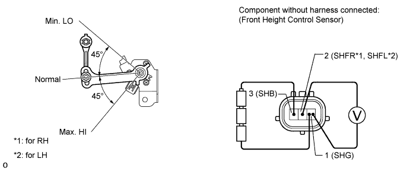

HEIGHT CONTROL SENSOR (for Front Side) > INSPECTION |
| 1. INSPECT FRONT HEIGHT CONTROL SENSOR SUB-ASSEMBLY LH |

Connect 3 dry batteries of 1.5 V in series.
Connect the positive (+) end of the batteries to terminal 3 (SHB) of the height control sensor and the negative (-) end of the batteries to terminal 1 (SHG). While slowly moving the sensor link up and down, measure the voltage between terminal 2 (SHFR*1, SHFL*2) and terminal 1 (SHG).
Measure the voltage according to the value(s) in the table below.
| Tester Connection | Condition | Specified Condition |
| 2 (SHFR) - 1 (SHG) | Max. HI | Approx. 4.1 V |
| Normal | Approx. 2.25 V | |
| Min. LO | Approx. 0.45 V |
| Tester Connection | Condition | Specified Condition |
| 2 (SHFL) - 1 (SHG) | Max. HI | Approx. 4.1 V |
| Normal | Approx. 2.25 V | |
| Min. LO | Approx. 0.45 V |